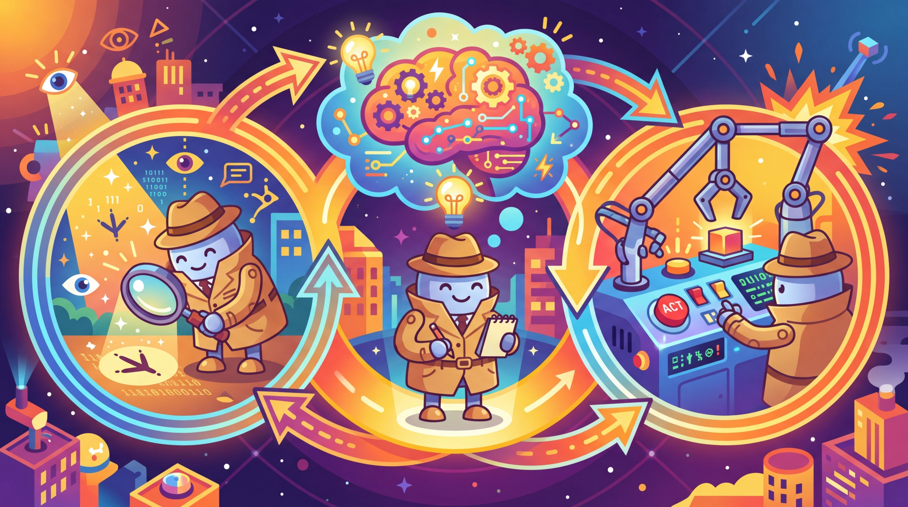

The best way to predict the future is to invent it. The second best way is to build an agent and let it figure things out.
A Visionary AI Agent
Prerequisites
This section assumes familiarity with LLM API basics from Section 9.1 and prompt engineering fundamentals from Section 10.1. An understanding of chain-of-thought reasoning from Section 10.2 will be particularly helpful, as the ReAct pattern builds directly on those ideas.
An AI agent is an LLM operating in a loop. Instead of producing a single response, an agent repeatedly perceives its environment, reasons about what to do, takes an action, and observes the result. This perception-reasoning-action cycle is the fundamental abstraction that transforms language models from passive text generators into active problem solvers. Understanding this loop, and the design patterns built on top of it, is essential for building any agentic system. The ReAct framework from Section 10.2 introduced the reasoning-plus-action pattern that agents formalize.
1. What Makes an Agent?
The term "agent" has been used loosely across the AI community, often applied to anything from a simple prompt chain to a fully autonomous system. To build effective agentic systems, we need precise definitions. An AI agent is a system that uses a language model to decide which actions to take and in what order, operating in a loop until a task is complete or a stopping condition is met. The critical distinction is autonomy in action selection: the model itself determines the next step rather than following a predetermined sequence.

The word "agent" comes from the Latin agere, meaning "to do." By that definition, most chatbots are really just "listeners" pretending to have a to-do list.
The Perception-Reasoning-Action Loop
Every agent, regardless of its complexity, follows the same fundamental cycle. The agent perceives its environment by receiving input (user messages, tool outputs, observations from previous actions). It then reasons about what to do next using the language model. Finally, it takes an action, which could be calling a tool, generating a response, or requesting more information. The results of that action become new perceptions, and the cycle repeats. Figure 21.1.1 depicts this fundamental loop.
Agents vs. Chains vs. Workflows
Understanding the spectrum from simple to complex orchestration helps clarify where agents fit. The hybrid ML/LLM decision framework from Chapter 11 can help determine whether a full agent is necessary or a simpler pipeline suffices. A chain is a fixed sequence of LLM calls with predetermined steps. A workflow uses conditional logic (if/else, loops) but with control flow defined by the developer. An agent gives the LLM itself control over the execution path. The model decides which tools to call, in what order, and when to stop.
| Aspect | Chain | Workflow | Agent |
|---|---|---|---|
| Control flow | Fixed sequence | Developer-defined conditionals | LLM-determined |
| Steps known in advance | Yes, always | Paths defined, selection dynamic | No, emergent |
| Determinism | High | Medium | Low |
| Error handling | Static retry logic | Branching on error type | Model reasons about recovery |
| Complexity | Simple | Moderate | High |
| Best for | Predictable pipelines | Structured tasks with variants | Open-ended problem solving |
Start with the simplest approach that works. Anthropic and other leading AI labs recommend using agents only when simpler patterns fail. Chains are easiest to debug and most predictable. Workflows add flexibility with manageable complexity. Agents provide maximum flexibility but introduce non-determinism, higher latency, and harder debugging. Choose the right level of autonomy for your use case.
2. The Four Agentic Design Patterns
Andrew Ng identified four foundational agentic design patterns that appear across virtually all agent architectures. These patterns can be used individually or composed together, and understanding them provides a vocabulary for designing and analyzing agentic systems.

Pattern 1: Reflection
In the reflection pattern, the LLM reviews its own output and iteratively improves it. This can be as simple as asking the model to critique its response, or as sophisticated as having separate "generator" and "critic" roles. Reflection is powerful because it lets the model catch errors, improve quality, and refine its approach without external feedback. Code Fragment 1 below puts this into practice.
# implement reflect_and_improve # Key operations: API interaction import openai client = openai.OpenAI() def reflect_and_improve(task: str, max_rounds: int = 3) -> str: """Generate a response, then iteratively improve it via self-reflection.""" # Step 1: Generate initial response draft = client.chat.completions.create( model="gpt-4o", messages=[{"role": "user", "content": task}] ).choices[0].message.content for round_num in range(max_rounds): # Step 2: Critique the current draft critique = client.chat.completions.create( model="gpt-4o", messages=[ {"role": "system", "content": "You are a critical reviewer. Find flaws, " "gaps, and areas for improvement. Be specific."}, {"role": "user", "content": f"Task: {task}\n\nDraft:\n{draft}\n\n" f"Provide specific, actionable critique."} ] ).choices[0].message.content # Step 3: Check if quality is satisfactory if "no major issues" in critique.lower(): break # Step 4: Revise based on critique draft = client.chat.completions.create( model="gpt-4o", messages=[ {"role": "system", "content": "Revise the draft to address all critique points."}, {"role": "user", "content": f"Original task: {task}\n\n" f"Current draft:\n{draft}\n\n" f"Critique:\n{critique}\n\nRevised version:"} ] ).choices[0].message.content return draft
Pattern 2: Tool Use
Tool use extends the LLM beyond text generation by giving it the ability to call external functions: searching the web, querying databases, executing code, sending emails, or interacting with any API. The model receives tool descriptions, decides when and which tools to call, and incorporates the results into its reasoning. This is covered in depth in Section 21.2.
Pattern 3: Planning
Planning involves the LLM decomposing a complex task into subtasks before executing them. Rather than acting step by step reactively, a planning agent creates an explicit plan, then executes each step while potentially revising the plan based on intermediate results. Plan-and-execute architectures, reflection loops, and tree search methods all fall under this pattern. Section 21.3 covers planning in detail.
Pattern 4: Multi-Agent Collaboration
In the multi-agent pattern, multiple LLM instances (each potentially with different system prompts, tools, or roles) collaborate to solve a problem. One agent might research while another writes; a supervisor agent might coordinate workers; or agents might debate to reach a consensus. Chapter 22 is dedicated entirely to multi-agent architectures. Figure 21.1.2 summarizes these four patterns.
3. The ReAct Framework
ReAct (Reasoning + Acting) is the most widely adopted agent architecture. We introduced ReAct as a prompting pattern in Section 10.2; here we build it into a full agent system with tool execution, state management, and error handling. ReAct interleaves reasoning traces ("Thought") with actions ("Action") and observations ("Observation") in a structured loop. The key insight is that explicit reasoning before each action dramatically improves decision quality compared to acting without thinking or thinking without acting.
# Define ReActAgent; implement __init__, run, _execute_action # Key operations: agent orchestration, tool integration, prompt construction from typing import Callable class ReActAgent: """Minimal ReAct agent: Thought -> Action -> Observation loop.""" def __init__(self, client, tools: dict[str, Callable], model: str = "gpt-4o"): self.client = client self.tools = tools self.model = model def run(self, task: str, max_steps: int = 10) -> str: # Build tool descriptions for the system prompt tool_desc = "\n".join( f"- {name}: {func.__doc__}" for name, func in self.tools.items() ) system_prompt = f"""You are a ReAct agent. For each step: 1. Thought: Reason about the current state and what to do next 2. Action: Call a tool using the format: ACTION: tool_name(args) 3. Wait for Observation (tool result) When you have the final answer, respond: FINAL ANSWER: [your answer] Available tools: {tool_desc}""" messages = [ {"role": "system", "content": system_prompt}, {"role": "user", "content": task} ] for step in range(max_steps): response = self.client.chat.completions.create( model=self.model, messages=messages ).choices[0].message.content messages.append({"role": "assistant", "content": response}) # Check for final answer if "FINAL ANSWER:" in response: return response.split("FINAL ANSWER:")[1].strip() # Parse and execute action if "ACTION:" in response: action_str = response.split("ACTION:")[1].strip() observation = self._execute_action(action_str) messages.append({ "role": "user", "content": f"Observation: {observation}" }) return "Max steps reached without final answer." def _execute_action(self, action_str: str) -> str: # Parse "tool_name(args)" format and execute try: name = action_str.split("(")[0].strip() args_str = action_str.split("(", 1)[1].rsplit(")", 1)[0] if name in self.tools: return str(self.tools[name](args_str)) return f"Error: Unknown tool '{name}'" except Exception as e: return f"Error executing action: {e}"
The ReAct implementation above uses text parsing for simplicity. In production, you would use the provider's native function calling API (covered in Section 21.2), which gives structured JSON outputs instead of requiring text parsing. The conceptual loop is the same: think, act, observe.
ReAct Trace Example
A typical ReAct trace shows the interleaved thought-action-observation pattern. Notice how the agent explicitly reasons before each action, and how observations feed back into the next reasoning step. Code Fragment 3 below puts this into practice.
# Example trace for: "What is the population of the capital of France?" Thought: I need to find the capital of France, then look up its population. The capital of France is Paris, but let me verify and get the current population figure. Action: search("Paris population 2024") Observation: Paris has a city population of approximately 2.1 million and a metropolitan area population of about 12.3 million. Thought: I now have the information. The capital of France is Paris, with a city population of about 2.1 million. I should provide both the city and metro figures for completeness. FINAL ANSWER: The capital of France is Paris, with a city population of approximately 2.1 million and a metropolitan area population of about 12.3 million.
4. Cognitive Architectures and State Machines
As agents grow more complex, the simple ReAct loop becomes insufficient. Cognitive architectures provide a richer framework for organizing agent behavior by introducing explicit state management, memory systems, and structured decision-making processes. A cognitive architecture defines how an agent thinks, not just what it thinks about.
Agent State Machines
Many production agents are best modeled as state machines, where the agent transitions between well-defined states based on its observations and decisions. This provides predictability and debuggability while still allowing the LLM to make autonomous decisions within each state. Figure 21.1.3 shows the agent state machine with its transitions. Code Fragment 4 below puts this into practice.
# Define AgentState, AgentContext, StatefulAgent; implement __init__, run, _handle_planning # Key operations: agent orchestration, tool integration, API interaction from enum import Enum from dataclasses import dataclass, field class AgentState(Enum): PLANNING = "planning" EXECUTING = "executing" REFLECTING = "reflecting" WAITING_FOR_HUMAN = "waiting_for_human" COMPLETE = "complete" ERROR = "error" @dataclass class AgentContext: """Tracks the full state of an agent's execution.""" task: str state: AgentState = AgentState.PLANNING plan: list[str] = field(default_factory=list) completed_steps: list[str] = field(default_factory=list) observations: list[dict] = field(default_factory=list) current_step_index: int = 0 error_count: int = 0 max_errors: int = 3 class StatefulAgent: """Agent that operates as a state machine with explicit transitions.""" def __init__(self, client, tools): self.client = client self.tools = tools self.transitions = { AgentState.PLANNING: self._handle_planning, AgentState.EXECUTING: self._handle_executing, AgentState.REFLECTING: self._handle_reflecting, AgentState.ERROR: self._handle_error, } def run(self, task: str) -> str: ctx = AgentContext(task=task) while ctx.state not in (AgentState.COMPLETE, AgentState.WAITING_FOR_HUMAN): handler = self.transitions.get(ctx.state) if handler: ctx = handler(ctx) else: break return self._format_result(ctx) def _handle_planning(self, ctx: AgentContext) -> AgentContext: # LLM creates a step-by-step plan plan = self._call_llm( f"Break this task into concrete steps:\n{ctx.task}" ) ctx.plan = self._parse_plan(plan) ctx.state = AgentState.EXECUTING return ctx def _handle_executing(self, ctx: AgentContext) -> AgentContext: if ctx.current_step_index >= len(ctx.plan): ctx.state = AgentState.REFLECTING return ctx step = ctx.plan[ctx.current_step_index] try: result = self._execute_step(step, ctx) ctx.observations.append({"step": step, "result": result}) ctx.completed_steps.append(step) ctx.current_step_index += 1 except Exception as e: ctx.error_count += 1 ctx.state = AgentState.ERROR if ctx.error_count >= ctx.max_errors \ else AgentState.EXECUTING return ctx def _handle_reflecting(self, ctx: AgentContext) -> AgentContext: # LLM reviews results and decides: complete or replan assessment = self._call_llm( f"Task: {ctx.task}\nCompleted: {ctx.completed_steps}\n" f"Results: {ctx.observations}\n\n" f"Is the task fully complete? If not, what remains?" ) if "complete" in assessment.lower(): ctx.state = AgentState.COMPLETE else: ctx.state = AgentState.PLANNING # Replan with new context return ctx
5. Agent Memory Systems
Effective agents require memory that goes beyond the conversation history within a single context window. Agent memory can be categorized into three types, each serving a different purpose and operating at a different timescale.
Working Memory (Short-Term)
Working memory holds the current conversation context, including the system prompt, user messages, tool calls and their results, and the agent's reasoning traces. This maps directly to the LLM's context window and is the most straightforward form of memory. The challenge is that it is bounded: as the agent takes more actions, the context window fills up.
Episodic Memory (Session-Based)
Episodic memory stores records of past interactions, allowing agents to recall previous conversations, successful strategies, and common user preferences. This is typically implemented via vector stores (Chapter 18) or structured databases that the agent can query.
Semantic Memory (Long-Term Knowledge)
Semantic memory stores factual knowledge, learned procedures, and domain-specific information. This includes the agent's tool documentation, domain knowledge bases, and procedural memory about how to accomplish recurring tasks. RAG systems (Chapter 19) are the primary mechanism for semantic memory. Code Fragment 5 below puts this into practice.
# Define AgentMemory; implement add_to_working, save_episode, recall_relevant # Key operations: retrieval pipeline, vector search, agent orchestration from dataclasses import dataclass, field from datetime import datetime @dataclass class AgentMemory: """Three-tier memory system for an AI agent.""" # Working memory: current context window contents working: list[dict] = field(default_factory=list) max_working_tokens: int = 100_000 # Episodic memory: past interaction summaries episodes: list[dict] = field(default_factory=list) # Semantic memory: learned facts and procedures knowledge: dict[str, str] = field(default_factory=dict) def add_to_working(self, message: dict): """Add a message to working memory, evicting old entries if needed.""" self.working.append(message) self._evict_if_needed() def save_episode(self, summary: str, outcome: str): """Save a completed interaction to episodic memory.""" self.episodes.append({ "timestamp": datetime.now().isoformat(), "summary": summary, "outcome": outcome }) def recall_relevant(self, query: str, top_k: int = 3) -> list[dict]: """Retrieve relevant episodes (in production, use vector similarity).""" # Simplified: in practice, embed query and search vector store return self.episodes[-top_k:] def _evict_if_needed(self): """Summarize and evict old messages when context is too large.""" # Estimate token count (rough: 4 chars per token) total = sum(len(str(m)) // 4 for m in self.working) while total > self.max_working_tokens and len(self.working) > 2: # Summarize oldest messages and replace them removed = self.working.pop(1) # Keep system prompt at index 0 self.save_episode(str(removed)[:200], "evicted") total = sum(len(str(m)) // 4 for m in self.working)
Token budgets are the primary constraint on agent capabilities. Every tool call result, observation, and reasoning trace consumes tokens from the context window. A single web search might return several thousand tokens. An agent that calls ten tools could easily consume 50,000+ tokens before generating its final response. Careful management of what goes into and out of the context window is essential for agents that need to take many steps.
6. Token Budget Management
Token management is one of the most practical challenges in building agents. Unlike a single-turn completion where you control the input size, agents accumulate context over many iterations. Without careful budgeting, agents hit context limits, lose important early context, or incur excessive costs.
Strategies for Managing Token Budgets
- Summarize tool outputs: Instead of including raw API responses, extract only the relevant fields. A search result page might be 10,000 tokens raw but only 200 tokens of useful information.
- Sliding window with summarization: Periodically summarize older conversation turns and replace them with a compact summary, keeping recent turns intact.
- Tiered context priority: Assign priorities to different message types. System prompts and the current task have highest priority; old tool results have lowest priority and are evicted first.
- Lazy loading: Instead of loading all context upfront, fetch information only when the agent needs it. Store tool descriptions in a separate index and inject only the ones the agent requests.
- Step limits: Set hard limits on the number of agent iterations. If the agent cannot solve a task in N steps, it should report what it found and ask for guidance.
| Strategy | Token Savings | Implementation | Risk |
|---|---|---|---|
| Summarize tool outputs | 50-90% | LLM-based or rule-based extraction | May lose relevant details |
| Sliding window | Variable | Drop oldest N messages | Loses early context |
| Tiered priority eviction | 30-60% | Score and rank all messages | Complex priority logic |
| Lazy tool loading | 20-40% | Tool registry with on-demand injection | Extra LLM call to select tools |
| Hard step limits | Bounded | Counter in agent loop | May not complete complex tasks |
The best agents are frugal with their context. Every token in the context window should earn its place. Production agents typically combine multiple strategies: summarizing tool outputs immediately, using a sliding window for conversation history, and imposing step limits as a safety net. The goal is to maintain the information density of the context while staying well within token limits.
7. Designing for Failure
Agents fail in ways that are qualitatively different from non-agentic systems. A simple chain either succeeds or produces an error. An agent can get stuck in loops, waste tokens on unproductive actions, misinterpret tool outputs, or take increasingly erratic actions as its context window degrades. Robust agent design requires anticipating and handling these failure modes. Chapter 25 covers how to observe and measure these failures in production.
Common Agent Failure Modes
- Infinite loops: The agent repeats the same action because it does not recognize that the result is unchanged. Always implement a maximum step counter.
- Tool misuse: The agent calls a tool with invalid arguments or misinterprets the output. Clear tool descriptions and structured error messages help.
- Goal drift: Over many steps, the agent gradually shifts away from the original task. Periodically re-injecting the original task description helps maintain focus.
- Context window overflow: The agent accumulates so much history that it cannot generate useful output. Token management strategies (above) are essential.
- Cascading errors: An early mistake propagates through subsequent steps, leading the agent further astray. Reflection checkpoints catch and correct errors early.
Knowledge Check
Show Answer
Show Answer
Show Answer
Show Answer
Show Answer
Key Takeaways
- An AI agent is an LLM operating in a perception-reasoning-action loop, where the model determines the control flow rather than the developer.
- Prefer the simplest orchestration pattern that works: chains before workflows, workflows before agents.
- The four agentic design patterns (Reflection, Tool Use, Planning, Multi-Agent) are composable building blocks for all agent architectures.
- ReAct interleaves explicit reasoning with actions and observations, providing a structured and debuggable agent loop.
- Agent state machines combine the predictability of workflows with the flexibility of agents by defining explicit states and transitions.
- Three-tier memory (working, episodic, semantic) addresses different timescales of agent information needs.
- Token budget management is a critical production concern; combine output summarization, sliding windows, and step limits.
- Design for failure by implementing step limits, re-injecting task descriptions, adding reflection checkpoints, and handling cascading errors.
Building a First AI Agent for IT Helpdesk Triage
Who: An IT operations manager and a junior ML engineer at a 2,000-employee enterprise
Situation: The IT helpdesk received 300+ tickets daily. Tier-1 agents spent 40% of their time on routine issues (password resets, VPN troubleshooting, software installation requests) that followed well-documented runbooks.
Problem: A simple chatbot with static decision trees handled only 25% of tickets because users described problems in unpredictable ways ("my computer is being weird" vs. "Outlook keeps crashing after the latest Windows update").
Dilemma: A fully autonomous agent with access to Active Directory and device management tools could resolve tickets end-to-end but posed security risks (what if it disabled the wrong account?). A classification-only agent was safe but still required human execution of every resolution.
Decision: They built a ReAct-style agent with tiered autonomy: the agent could autonomously execute low-risk actions (check account status, look up device info, send KB articles), but required human approval for medium-risk actions (password resets, group membership changes) and could not perform high-risk actions (account deletion, admin privilege grants) at all.
How: Each tool was tagged with a risk level. The agent's system prompt enforced the approval workflow. A supervisor dashboard showed pending approvals with the agent's reasoning chain, allowing Tier-1 agents to approve with one click.
Result: The agent autonomously resolved 35% of tickets and pre-triaged another 40% (reducing Tier-1 handling time from 12 minutes to 3 minutes per ticket). Zero security incidents occurred in the first 6 months.
Lesson: Tiered autonomy (auto-execute low risk, human-approve medium risk, block high risk) lets you deploy agents safely while still capturing significant efficiency gains from automation.
Agentic Reasoning and Self-Improvement (2024-2026): Recent work explores agents that learn from their own execution traces, adapting their strategies without retraining the underlying model. Reflexion (Shinn et al., 2023) demonstrated verbal reinforcement learning where agents store failure reflections in episodic memory. Voyager (Wang et al., 2023) showed that agents can build a persistent skill library, composing new abilities from previously learned ones. Open questions remain about how to balance exploration with exploitation in agentic settings and how to evaluate agents on long-horizon tasks where success depends on dozens of sequential decisions. The intersection of reasoning models (covered in Section 21.5) with self-improving agents is a particularly active area.
What's Next?
In the next section, Section 21.2: Tool Use & Function Calling, we explore tool use and function calling, the capability that allows agents to interact with external systems and APIs.
References & Further Reading
Yao, S. et al. (2023). "ReAct: Synergizing Reasoning and Acting in Language Models." ICLR 2023.
The paper that defined the reasoning-plus-acting paradigm for LLM agents. Shows how interleaving thought and action improves task completion. The most-cited reference in the AI agents literature.
A comprehensive survey covering agent architectures, capabilities, and applications. Organizes the field into a clear taxonomy. Best single resource for understanding the agent landscape.
An extensive survey with emphasis on cognitive architectures and social simulation. Covers both single-agent and multi-agent scenarios. Complements the Wang et al. survey with different perspectives.
Sumers, T.R. et al. (2024). "Cognitive Architectures for Language Agents." TMLR.
Proposes a formal framework (CoALA) for understanding language agent architectures. Draws on cognitive science to organize agent design patterns. Essential for researchers designing principled agent systems.
Anthropic (2024). "Building Effective Agents."
Anthropic's practical guide to building agents with Claude, covering common patterns and best practices. Includes concrete implementation advice. Must-read for teams building production agents with Claude.